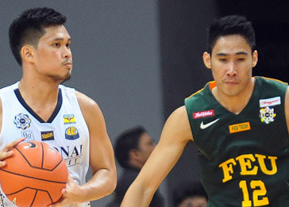

background

NU Bulldogs end six decades of futility
THE National University Bulldogs completed their amazing transformation from whipping boys into UAAP basketball champions on Wednesday afternoon by beating the Far Eastern University Tamaraws, 75-59, in sudden death before a record crowd at the Smart Araneta Coliseum. Alfred Aroga and Gelo Alolino led from the front for the Bulldogs, who also got significant contributions from a host of role players like Rev Diputado, Glenn Khobuntin and J-Jay Alejandro to wrap up the best-of-three series, 2-1, and lock up just their second UAAP title - and first after six decades. During those dark days, rare were the years when the Bulldogs finished out of the cellar, until they came to back to life behind the support of the country's wealthiest family, the Sys of the SM mall chain, and a hardy bunch that stepped up following the departure of top star Bobby Ray Parks. "It was quite a journey," said coach Eric Altamirano, who was tasked to revive the Bulldogs by the Sys but suffered one playoff heartbreak after another in his first few years in charge. "I'm overwhelmed," Altamirano added. "Who would have thought that we will win after going through all those playoff heartbreaks."
The Bulldogs finally got over the hump this season thanks to the vastly improved Alfred Aroga, who carried the team on his back in the run to their first finals appearance since 1974. To cap off his heroics, the hulking Cameroonian finished with 24 points and 18 rebounds in the title-clinching Game Three win to lock up Finals MVP honors. "We're thankful we got Alfred. Pagdating pa lang n'ya dito, he wasn't able to play for us," said Altamirano of his center, who failed to suit up last season due to residency problems. "He went through a lot of heartaches. Thank God for bringing Alfred to our team. He brought leadership to our team and he carried himself well on and off the court." FEU's big two of Mike Tolomia and Mac Belo carried the fight with 23 and 17 points, respectively, but the Tamaraws got little from the role players that had played so well for them all season. In contrast, the Bulldogs got big games from Alolino (12 points), Khobuntin (10), Alejandro (10), Diputado (five points) and even Kyle Neypes (eight) as they collectively atoned for the quiet six-point performance of star Troy Rosario.
It was the rookie Diputado's five successive points that capped a 10-point run that gave NU its first big lead, 49-35, in the third quarter before Khobuntin's three-point play opened a 73-54 lead for the Bulldogs with 1:51 left. That started the celebrations on NU's side of the gallery, which included one of its most prominent alumni, former President Fidel V. Ramos, and Nestor Sapida - believed to be the last surviving member of the Bulldogs' first champion team in 1954. The scores: NU - Aroga 24, Alolino 12, Khobuntin 10, Alejandro 10, Neypes 8, Rosario 6, Diputado 5, Javelona 0, Betayene 0, Perez 0, Salim 0. FEU - Tolomia 23, Belo 17, Dennison 6, Cruz 4, Jose 4, Inigo 3, Hargrove 2, Tamsi 0, Pogoy 0, Ri. Escoto 0, Escoto 0, Ugsang 0.